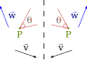
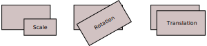
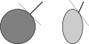

Lezione 5
Calcolo numerico per la generazione di immagini fotorealistiche
Maurizio Tomasi maurizio.tomasi@unimi.it
Modellizzazione di oggetti
«Cornell box»

«Cornell box»


Il problema geometrico
- Collocazione degli oggetti nello spazio?
- Dove sta l’osservatore, e verso cosa sta guardando?
- Superficie degli oggetti?
Posizioni e trasformazioni
La descrizione geometrica di un oggetto nello spazio fa solitamente uso di trasformazioni.
Queste trasformazioni sono necessarie per collocare gli oggetti che compongono la scena in modo che la loro posizione, il loro orientamento e le loro dimensioni siano quelle desiderate.
Anche la posizione della telecamera viene specificata tramite trasformazioni che ne identificano la posizione (dove sta l’osservatore?) e l’orientamento (in che direzione sta guardando?).
Interazione con superfici
Il modo in cui un raggio di luce interagisce con una superficie dipende dalla BRDF, che è espressa in termini dell’angolo \theta = N_x \cdot \Psi tra la direzione di incidenza \Psi e la normale N_x alla superficie nel punto x.
Codifica della geometria
Per risolvere l’equazione del rendering numericamente, il nostro codice deve trattare correttamente una serie di quantità:
- Punti nello spazio tridimensionale (posizioni dei vertici del comodino);
- Vettori 3D (direzioni di propagazione della luce);
- Normali (rappresentano l’inclinazione della superficie in un punto);
- Matrici (codificano le trasformazioni).
Ripassiamo quindi le proprietà di questi oggetti geometrici.
Ripasso di algebra lineare
Spazi vettoriali
Uno spazio vettoriale V su un campo F è un insieme non vuoto V di elementi, detti vettori, associato a due operatori +: V \times V \rightarrow V e \cdot: F \times V \rightarrow V che soddisfano queste proprietà \forall u, v, w \in V, \forall \alpha, \beta \in F:
- + è commutativo e associativo;
- Esiste un vettore 0 che è elemento neutro per +;
- \forall u \in V,\ \exist -u \in V: u + (-u) = 0;
- \alpha(\beta v) = (\alpha\beta) v,\quad (\alpha + \beta) v = \alpha v + \beta v,\quad \alpha(v + u) = \alpha v + \alpha u;
- Se 1 \in F è l’elemento neutro del prodotto su F, allora 1u = u.
Prodotto interno
Dato uno spazio vettoriale V su F, il prodotto interno è un’operazione \left<\cdot, \cdot\right>: V \times V \rightarrow F che gode delle seguenti proprietà \forall u, v, w \in V, \forall \alpha \in F:
- \left<\alpha u, v\right> = \alpha \left<u, v\right>;
- \left<u + v, w\right> = \left<u, w\right> + \left<v, w\right>;
- \left<u, v\right> = \overline{\left<v, u\right>};
- \left<u, u\right> > 0 se u \not= 0.
Un esempio è il classico prodotto scalare \vec u \cdot \vec v = \left\|\vec u\right\|\,\left\|\vec v\right\|\,\cos\theta su \mathbb{R}^n.
Norma e ortogonalità
Dato un prodotto interno, si può definire la norma \left\|\cdot\right\|: V \rightarrow F in questo modo:
\left\|u\right\| = \sqrt{\left<u, u\right>},
che è positiva definita, e si annulla solo se u = 0.
Si definiscono ortogonali due vettori u e v se vale che \left<u, v\right> = 0.
Un vettore u tale che \left\|u\right\| = 1 si dice normalizzato.
Generatori
Lo spazio generato da un insieme di vettori \{v_i\}_{i=1}^N è l’insieme
\mathrm{Span}\left(\{v_i\}_{i=1}^N\right) = \left\{\sum_{i=1}^N \alpha_i v_i \forall \alpha_i \in F\right\}.
Nel caso di \mathbb{R}^3:
- Lo spazio generato da \vec v è la retta passante per 0 e allineata con \vec v.
- Lo spazio generato da due vettori \vec v e \vec w non paralleli è il piano passante per l’origine su cui giacciono \vec v e \vec w. (V. slide seguente).
Esempio: piano generato
Basi (1/2)
I vettori \{v_i\}_{i=1}^N si dicono linearmente indipendenti se l’uguaglianza
\sum_{i=1}^N \alpha_i v_i = 0
vale solo se \alpha_i = 0\ \forall i=1\ldots N.
Un insieme di vettori \left\{v_i\right\}_{i=1}^N è detto base di B se sono linearmente indipendenti e generano V, ossia
\mathrm{Span}\left(\{v_i\}_{i=1}^N\right) = V.
Basi (2/2)
Se V ammette due basi \left\{e_i\right\}_{i=1}^N ed \left\{f_i\right\}_{i=1}^M, il numero di elementi in entrambe è identico (N = M) ed è detto dimensione di V. (Ignoriamo in questo corso gli spazi infinito-dimensionali.)
Si definisce base ortonormale di uno spazio vettoriale V dotato di prodotto interno l’insieme di vettori \left\{e_i\right\}_{i=1}^N tali che
\left<e_i, e_j\right> = \delta_{ij}\quad\forall i, j = 1 \ldots N.
Rappresentazione di vettori
Data una base \{e_i\}_{i=1}^N, è sempre possibile scrivere v \in V come
v = \sum_{i=1}^N \alpha_i e_i,
dove \alpha_i \in F. (Conseguenza del fatto che la base genera lo spazio V).
Tale rappresentazione è sempre unica; se la base è ortonormale, allora
\alpha_i = \left<v, e_i\right>.
I vettori si rappresentano come matrici a una colonna: v = (\alpha_1\ \alpha_2\ \ldots)^t.
Rappresentazione di vettori
Il fatto che \alpha_i = \left<v, e_i\right> vale solo se la base è ortonormale!
Ad esempio, consideriamo sul piano \mathbb{R}^2 la base e_1 = (1, 0), e_2 = (1, 1). Il vettore v = (4, 3) si scompone risolvendo un sistema lineare, e la soluzione è
v = e_1 + 3 e_2 = \begin{pmatrix}1\\0\end{pmatrix} + 3 \begin{pmatrix}1\\1\end{pmatrix} = \begin{pmatrix}4\\3\end{pmatrix},
ma \left<v, e_1\right> = 4 e \left<v, e_2\right> = 7.
Il nostro codice userà sempre basi ortonormali.
Trasformazioni lineari
Una trasformazione lineare da uno spazio vettoriale V a uno spazio W è una funzione lineare f: V \rightarrow W:
f(\alpha u + \beta v) = \alpha f(u) + \beta f(v).
Dalla linearità ne segue che f(0) = 0, perché
f(0) = f(v - v) = f(v) - f(v) = 0\quad\forall v \in V.
Matrici (1/2)
Una matrice M è un insieme di valori scalari \left\{m_{ij}\right\} \in F che rappresenta una trasformazione lineare f: V \rightarrow W secondo una coppia di basi per V e per W.
La matrice M che rappresenta f: V \rightarrow W deve avere n = N colonne e m = M righe, dove N è la dimensione di V e M è la dimensione di W.
Matrici (2/2)
Se si conosce il valore di f(e_i)\ \forall e_i, si può calcolare f su qualsiasi vettore:
f(v) = f\left(\sum_{i=1}^N \alpha_i e_i\right) = \sum_{i=1}^N \alpha_i f(e_i).
Il punto precedente si lega al fatto che la colonna i-esima della matrice M contiene la rappresentazione di f(e_i), con e_i elemento i-esimo della c.d. base canonica di V: e_1 = (1\ 0\ 0\ldots)^t, e_2 = (0\ 1\ 0\ldots)^t, etc.
Primo esempio
Consideriamo la matrice in \mathbb{R}^2
M = \begin{pmatrix}3&4\\2&-1\end{pmatrix}
e la base canonica e_1 = (1\ 0)^t, e_2 = (0\ 1)^t.
È facile vedere che la prima colonna di M è uguale a M e_1 e la seconda a M e_2:
M e_1 = \begin{pmatrix}3&4\\2&-1\end{pmatrix} \begin{pmatrix}1\\0\end{pmatrix} = \begin{pmatrix}3\\2\end{pmatrix},\quad M e_2 = \begin{pmatrix}3&4\\2&-1\end{pmatrix} \begin{pmatrix}0\\1\end{pmatrix} = \begin{pmatrix}4\\-1\end{pmatrix}.
Secondo esempio
Scriviamo la matrice R(\theta) che rappresenta una rotazione di \theta intorno all’origine del piano cartesiano xy.
Per quanto detto, è sufficiente calcolare R(\theta) e_1 e R(\theta) e_2:
R(\theta) e_1 = \begin{pmatrix}\cos\theta\\\sin\theta\end{pmatrix}, \quad R(\theta) e_2 = \begin{pmatrix}\cos(\theta + 90^\circ)\\\sin(\theta + 90^\circ)\end{pmatrix} = \begin{pmatrix}-\sin\theta\\\cos\theta\end{pmatrix},
perché essi sono le colonne della matrice R(\theta):
R(\theta) = \begin{pmatrix}\cos\theta&-\sin\theta\\\sin\theta&\cos\theta\end{pmatrix}.
Riflessioni
Consideriamo ora un tipo particolare di trasformazione, detta riflessione.
Punti, vettori ed angoli si trasformano in maniera intuitiva rispetto alle riflessioni:

Pseudovettori
Consideriamo ora un’automobile che si allontana da noi, e la sua copia riflessa.
Il momento angolare delle ruote \vec\omega non si trasforma come un normale vettore nella riflessione: è uno pseudovettore.


Pseudovettori
Il problema di \vec\omega è che è definito tramite il prodotto vettoriale: \vec \omega = \vec r \times \vec p, e il risultato di un prodotto vettoriale è sempre uno pseudovettore.
Questo si vede anche nel caso della legge di Ampère:


Trasformazioni
Tipi di trasformazioni
Con l’eccezione delle trasformazioni 3D→2D, implementeremo t. invertibili.
Le trasformazioni che implementeremo saranno le seguenti:
- Trasformazione di scala (ingrandimento/rimpicciolimento);
- Rotazione attorno ad un asse;
- Traslazione (spostamento).

Trasformazioni di scala
Proprietà generali
Una trasformazione di scala è rappresentata da una matrice diagonale M = \mathrm{diag}(s_1, s_2, \ldots) con s_i \not= 0\ \forall i:
M = \begin{pmatrix}s_1& 0& \vdots\\0& s_2& \vdots\\\ldots& \ldots&\end{pmatrix}.
Trasformazioni di scala in cui s_i < 0 sono anche dette speculari rispetto all’asse i-esimo (riflessione rispetto a uno specchio).
Esempio
Un cerchio sul piano può essere trasformato in un ellisse tramite una trasformazione di scala; nell’esempio qui sotto, M = \mathrm{diag}(1/2, 1):

Una riflessione rispetto all’asse y è rappresentata da M = \mathrm{diag}(1, -1).


Trasformazioni e normali
Già con questo tipo di trasformazioni abbiamo un problema!
Le normali agli oggetti non si trasformano come dovrebbero:

Qual è la legge di trasformazione per le normali?
Trasformazioni e normali
Una normale \hat n è definita in termini del vettore tangente \hat v:
\hat n^t \hat v = 0.
Supponiamo di voler applicare la trasformazione N (invertibile) al vettore \hat v. Al vettore \hat n dovremo applicare una trasformazione M tale che
\left(M \hat n\right)^t \left(N \hat v\right) = 0.
Trasformazioni e normali
Sapendo che \left(A B\right)^t = B^t A^t, si ottiene che
\left(M \hat n\right)^t \left(N \hat v\right) = 0\quad\Rightarrow\quad\hat n^t \left(M^t N\right) \hat v = 0.
Sapendo già che \hat n^t \hat v = 0, ne segue che l’equazione è vera se
M^t N = \mathbb{1}\quad\Rightarrow\quad M = \left(N^{-1}\right)^t,
dove abbiamo usato l’assunzione che la trasformazione N ammette un’inversa.
Trattamento delle normali
Abbiamo visto che le normali si comportano in maniera diversa dai vettori nel caso specifico delle trasformazioni di scala.
Il risultato che abbiamo ottenuto è però generale: non vale solo per trasformazioni di scala, ma per qualsiasi trasformazione invertibile N.
In codici numerici è conveniente memorizzare in un tipo (
struct,class,record, etc.) che rappresenta una trasformazione invertibile sia la matrice N corrispondente a una trasformazione che la trasposta della sua inversa \left(N^{-1}\right)^t: si impiega più memoria, ma i calcoli sono più rapidi.
Rotazioni
Formalismo
Per definire una rotazione sul piano attorno all’origine è sufficiente un grado di libertà.
Però per definire una rotazione in tre dimensioni intorno all’origine sono necessari tre gradi di libertà: l’asse di rotazione e l’angolo. (L’asse di rotazione è un vettore di lunghezza unitaria, quindi ha solo due gradi di libertà).
Ci sono vari modi per rappresentare una rotazione, alcuni più efficaci di altri a seconda del contesto: angoli di Eulero, angolo/asse, matrici di rotazione, quaternioni. Noi ci concentreremo sulle matrici di rotazione.
Rotazioni e matrici
In 2D, abbiamo già scritto la matrice di rotazione attorno all’origine:
R(\theta) v = \begin{pmatrix}\cos\theta&-\sin\theta\\\sin\theta&\cos\theta\end{pmatrix} \begin{pmatrix}v_1\\v_2\end{pmatrix} = \begin{pmatrix}v_1\cos\theta - v_2\sin\theta\\v_1\sin\theta + v_2\cos\theta\end{pmatrix}.

In 2 dimensioni, vale che R(\alpha) R(\beta) = R(\beta) R(\alpha) = R(\alpha + \beta).

Rotazioni in 3D
In 3 dimensioni, le rotazioni possono essere notevolmente più complesse, perché ci sono infiniti assi usabili per la rotazione intorno all’origine!
In generale, una matrice R in \mathbb{R^n} rappresenta una rotazione se e solo se \det R = 1 e R R^t = \mathbb{1}, ossia se la trasposta coincide con l’inversa.
Composizione di rotazioni
In 3D, la composizione di rotazioni non commuta (a differenza del caso 2D).
I due dadi qui sotto subiscono due rotazioni R_1 ed R_2: per il rosso la rotazione è R_1 R_2, per il verde è R_2 R_1. Si vede che le posizioni finali sono diverse:
Rotazioni elementari
È facile scrivere le rotazioni attorno ai tre assi \hat e_x, \hat e_y ed \hat e_z. Ad esempio, la rotazione attorno a \hat e_z è
R_z(\theta) v = \begin{pmatrix}\cos\theta&-\sin\theta&0\\\sin\theta&\cos\theta&0\\0&0&1\end{pmatrix}.
È possibile scrivere una matrice R_{\hat v}(\theta) che descriva una rotazione di un angolo θ attorno a un asse \hat v arbitrario; vedi la pagina Wikipedia per i dettagli.
Angoli di Eulero
Una rotazione generica R_{\hat v}(\theta) è sempre esprimibile come prodotto delle rotazioni elementari R_x(\theta_x), R_y(\theta_y) e R_z(\theta_z) per adeguati valori di \theta_x, \theta_y, \theta_z.
Questa proprietà è alla base del formalismo delle rotazioni con gli angoli di Eulero, che però noi non useremo nel nostro codice.
Traslazioni
Il problema delle traslazioni
Una traslazione T_{\vec{k}} è una operazione che sposta un punto P di \vec{k}:
T_{\vec{k}} (P) = P + \vec{k}.
Finora abbiamo utilizzato matrici per rappresentare trasformazioni di scala e rotazioni. Purtroppo le matrici 3×3 non possono rappresentare traslazioni nello spazio tridimensionale: una traslazione T non è un operatore lineare! Se lo fosse, allora varrebbe che
T_{\vec{k}}(0) = 0\quad\forall\ \vec{k}.
Coordinate omogenee
Fortunatamente è possibile un trucco, molto usato nella computer graphics, che consiste nell’usare coordinate omogenee.
Nelle coordinate omogenee si considera lo spazio \mathbb{R}^4 anziché \mathbb{R}^3, e si scrivono i punti P e i vettori \vec{v} in modo diverso:
P = \begin{pmatrix}p_x\\p_y\\p_z\\1\end{pmatrix}, \quad \vec{v} = \begin{pmatrix}v_x\\v_y\\v_z\\0\end{pmatrix}.
Trasformazioni omogenee
Una matrice M si trasforma in coordinate omogenee aggiungendo una riga e una colonna:
M = \begin{pmatrix} m_{11}&m_{12}&m_{13}\\ m_{21}&m_{22}&m_{23}\\ m_{31}&m_{32}&m_{33} \end{pmatrix}\ \rightarrow% \ M_h = \begin{pmatrix} m_{11}&m_{12}&m_{13}&0\\ m_{21}&m_{22}&m_{23}&0\\ m_{31}&m_{32}&m_{33}&0\\ 0&0&0&1 \end{pmatrix}
Dalla forma a blocchi di M_h è immediato capire che l’applicazione di M_h a P e a \vec{v} porta allo stesso risultato del caso non-omogeneo in ℝ³.
Traslazioni
Nelle coordinate omogenee, l’operazione di traslazione lungo un vettore \vec{k} è lineare, e si rappresenta così:
T_{\vec{k}} = \begin{pmatrix} 1&0&0&k_x\\ 0&1&0&k_y\\ 0&0&1&k_z\\ 0&0&0&1 \end{pmatrix}
L’operatore è ovviamente lineare, perché è in forma matriciale.
Proprietà
- T_{\vec{k}}^{-1} = T_{-\vec{k}}: la trasformazione inversa della traslazione lungo \vec{k} è la traslazione lungo -\vec{k};
- T_{\vec{u}} T_{\vec{w}} = T_{\vec{u} + \vec{w}}: la composizione di due traslazioni è uguale alla traslazione lungo la somma dei due vettori;
- T_{\vec{u}} T_{\vec{w}} = T_{\vec{w}} T_{\vec{u}}: le traslazioni sono operatori commutativi;
- T_{\vec{k}} \vec{v} = \vec{v}: a differenza dei punti, i vettori non vengono traslati.
Rototraslazioni
Comporre una traslazione T_{\vec{k}} e una rotazione R(\theta) dipende dall’ordine: il risultato di T_{\vec{k}}\,R(\theta) è diverso da quello di R(\theta)\,T_{\vec{k}}:
Si può verificare che le matrici omogenee implementano correttamente questo comportamento.
Numeri di versione
Scopo dei numeri di versione
- Ogni programma dovrebbe avere un numero di versione associato, che dice quanto sia aggiornato un programma.
- Un utente può confrontare un numero di versione sul sito ufficiale del programma con quello del programma installato sul proprio computer.
- Molti diversi approcci ai numeri di versione.
Esempio I: data di rilascio
- Ubuntu Linux: distribuzione Linux.
- Il numero di versione è la data di rilascio nella forma
anno.mese, a cui si associa un soprannome come «Focal fossa» (20.04). - Associato a un rigido calendario di rilascio (ogni 6 mesi).
- Gli standard ISO del C++ seguono uno schema simile, usando solo l’anno: C++11, C++14, C++17, C++20, …
- Utile soprattutto se si segue un calendario rigido e regolare.
Esempio II: numero irrazionale
TeX: programma di tipografia digitale creato da Donald Knuth (per digitare The art of computer programming, 1962–2019).
La versione è l’arrotondamento del valore di \pi, dove ogni versione successiva aggiunge una cifra:
- 3
- 3.1
- 3.14
- 3.141…
METAFONT, il programma che gestisce i font di TeX, usa e = 2.71828\ldots
Matematicamente affascinante, ma poco pratico!
Esempio III: versioni pari/dispari
- Versioni indicate con
X.Y, doveXè la «major version» eYla «minor version». - Se
Yè pari, la versione è stabile (es.,2.0,2.2,2.4, …); altrimenti è una versione di sviluppo (es.,2.1,2.3,2.5…), non pronta per essere usata dal pubblico generico ma solo dagli utenti più smaliziati. - Nim, Gtk+, GNOME, Lilypond seguono questo approccio.
- Molto usato in passato, ora tende ad essere abbandonato: l’esperienza ha dimostrato che le versioni dispari tendono spesso a diventare «eterne».
Esempio IV: semantic versioning
- Lo schema che useremo nel corso è il cosiddetto semantic versioning, usato ad
esempio da Julia e Python, che usa lo schema
X.Y.Z:Xè la «major version»Yè la «minor version»Zè la «patch version»
- Le regole per assegnare valori a
X,YeZsono rigide, e consentono agli utenti di decidere se valga la pena aggiornare un software o no.
Semantic versioning (1/2)
- Si parte dalla versione
0.1.0. - Ad ogni rilascio di una nuova versione, si segue una di queste
regole:
- Si incrementa
Z(«patch number») se si sono solo corretti dei bug; - Si incrementa
Y(«minor number») e si resettaZse si sono aggiunte funzionalità nuove; - Si incrementa
X(«major number») e si resettanoYeZse si sono aggiunte funzionalità che rendono il programma incompatibile con l’ultima versione rilasciata.
- Si incrementa
Semantic versioning (2/2)
- Nelle prime fasi di vita di un progetto, si rilasciano rapidamente nuove versioni che sono usate da «beta testers»; non è importante indicare quando si introducono incompatibilità, perché queste sono frequenti ma gli utenti sono ancora pochi.
- La versione
1.0.0va rilasciata quando il programma è pronto per essere usato da utenti generici. - Di conseguenza, le versioni precedenti alla
1.0.0seguono regole diverse:- Si incrementa
Zse si correggono bug; - Si incrementa
Ye si resettaZin tutti gli altri casi.
- Si incrementa
Esempio (1/3)
Abbiamo scritto un programma che stampa
Hello, world!:$ ./hello Hello, wold!La prima versione «ufficiale» che rilasciamo, dopo numerose versioni beta (è un progetto complesso!), è ovviamente la
1.0.0Ci accorgiamo che il programma stampa
Hello, wold!, così correggiamo il problema e rilasciamo la versione1.0.1(correzione di un bug).
Esempio (2/3)
Aggiungiamo una nuova funzionalità: se si passa un nome come
Paperinoda riga di comando, il programma stampaHello, Paperino!. Senza argomenti, il programma scrive ancoraHello, world!:$ ./hello Hello, world! $ ./hello Paperino Hello, Paperino!Abbiamo aggiunto una funzionalità ma abbiamo preservato la compatibilità (senza argomenti, il programma funziona ugualmente come la versione
1.0.1), quindi la nuova versione sarà la1.1.0.
Esempio (3/3)
Decidiamo che è giunto il momento di introdurre l’internazionalizzazione nel nostro codice (internationalization, abbreviato in I18N)
Il codice verifica il valore della variabile d’ambiente
$LANG(usato sui sistemi Unix) e decide in che lingua stampare il messaggio:$ ./hello Paperino # …when I run it on a english-talking machine Hello, Paperino! $ LANG=it_IT.UTF-8 ./hello Pippo Salve, Pippo!Il programma non è compatibile con la versione
1.1.0, perché su una macchina italiana ora stampaSalve, mondo!anzichéHello, world!Devo quindi rilasciare la versione
2.0.0
Punto di vista di un utente
- Se viene rilasciata una nuova «patch release» della versione che si
sta usando (es.,
1.3.4→1.3.5), l’utente dovrebbe sempre aggiornare. - Se viene rilasciata una nuova «minor release» della versione che si
sta usando (es.,
1.3.4→1.4.0), l’utente dovrebbe aggiornare solo se ritiene utili le nuove caratteristiche. - Una nuova «major release» (es.,
1.3.4→2.0.0) dovrebbe essere installata solo da nuovi utenti, o da chi è intenzionato ad aggiornare il modo in cui si usa il programma.